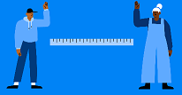
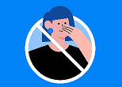
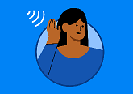

Il n'a pas été trouvé que l'hydroxychloroquine peut le guérir ou le traiter.
Certaines choses à savoir
La chaleur et l'humidité n'en stoppent pas la propagation.

Les compléments alimentaires et les vitamines ne le guériront pas.
Conseils de prévention courants
Lorsqu'il est impossible de maintenir une distance suffisante avec les autres, portez un masque pour vous couvrir la bouche et le nez.

Gardez une distance de 6 pieds ou de 2 bras les uns des autres.

Ne vous touchez pas les yeux, le nez ou la bouche.

Écoutez les consignes de votre gouvernement et restez chez vous.
Toussez et éternuez dans le creux du coude ou dans un mouchoir.
Lavez-vous les mains régumièrement et désinfectez les surfaces fréquemment touchées chez vous.
Sécurisation des vaccins
La sécurité des vaccins est testée
Les vaccins réduisent le risque de contracter une maladie en travaillant avec les défenses naturelles de votre corps pour vous protéger. Les scientifiques développent des vaccins sans risque depuis des décennies.
Tests en laboratoire
Les experts scientifiques testent d'abord la sécurité et l'efficacité d'un vaccin potentiel en laboratoire.
Essais cliniques
Les vaccins prometteurs passent en phase d'essais cliniques, pendant lesquels des volontaires testent les vaccins.
Les essais cliniques testent rigoureusement la sécurité et l'efficacité des vaccins. La barre est placée très haute en la matière.
Les scientifiques répondent au besoin urgent de vaccins contre le Covid-19 en menant plusieurs phases du processus de concert. Cela n'affecte en rien la sécurité du processus.
Approbation des vaccins
Des médecins et des scinetifiques experts examinent les données des essais cliniques pour approuver ou non un vaccin dans un pays.
Plusieurs vaccins peuvent être approuvés dans un pays. Certains peuvent l'être pour des groupes spécifiques de personnes en priorité. Un professionnel de la santé peut vous aider à obtenir le bon vaccin.
Une fois un vaccin approuvé, les scientifiques continuent d'en surveiller la sécurité.